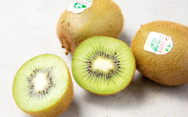

키위샐러드

키위샐러드
재료
골드키위 1개, 그린키위 1개, 블루베리, 래디쉬, 루꼴라, 오렌지제스트
레시피
- 1. 먹기 좋게 후숙된 키위를 깨끗하게 씻어주세요.
- 2. 껍질을 벗기고 얇게 잘라 접시에 올려주세요.
- 3. 블루베리, 루꼴라, 래디쉬를 올려주세요.
- 4. 오렌지제스트를 더하면 향긋하고 상큼해요.
- 5. 취향에 맞는 드레싱을 뿌려주면 완성입니다.